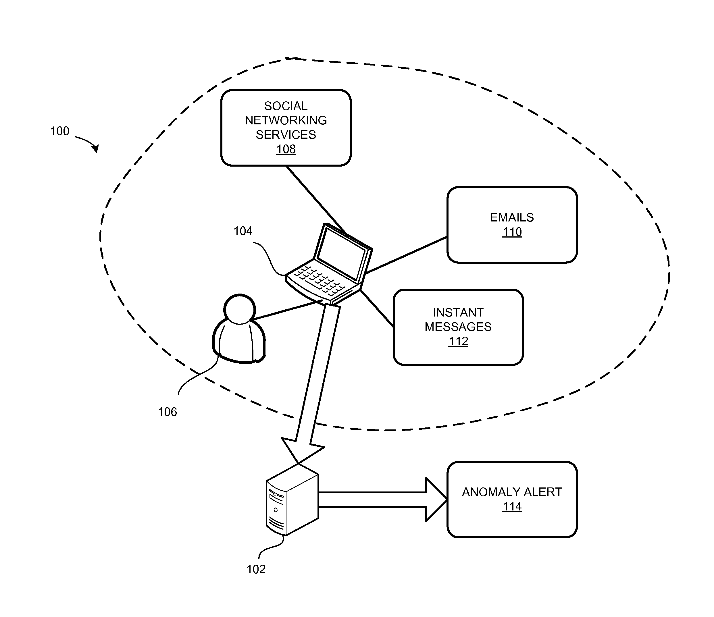

My work looks at the hidden infrastructure behind our online lives, the systems that quietly track us, profile us, and
turn our personal data into something profitable. I am interested in the severity of that surveillance, the way it
operates just out of sight while shaping how we are seen, targeted, and understood by companies.
By pulling patents, diagrams, and extraction methods into view, I am revealing how these technologies map our behaviour,
relationships, and decisions for commercial gain. It is easy to move through the internet without thinking about what we
are giving away or who benefits from it. But the reality is that our digital selves are constantly being collected,
repackaged, and sold.
This piece is my way of making that process visible, of confronting the quiet mechanisms built to capture us, and
questioning the cost of living in a world where almost everything about us becomes data for someone else to use.

Click on the button below to explore my interactive first-person narrative experience, a story-driven game where you uncover the truth
behind the “bug” and what it represents, and how my final piece took shape through that unfolding journey.
A diagram is etched across it—intricate, delicate, familiar. Then I understand. These aren’t scraps.
They’re patents. Designs. Schematics. The blueprints companies use to take from people quietly, methodically.
These are the things the bug used to steal from me, from everyone. And now they’re everywhere.
I manage to catch only a few, handfuls at most, and place them carefully at my feet.
Even with so few, they form a small, scattered pattern, giving me a glimpse of what the bug has collected.
I study them quietly, trying to take in what I’m seeing, piece by piece.

This patent outlines a system that analyzes a user’s social-media data to model and visualize relationship strength over
time. It classifies contacts (friends, colleagues, acquaintances) into types (personal, operational, strategic), tracks
interactions (messages, posts, profile data), and predicts future tie-strength — effectively profiling social
relationships by mining personal activity.

This system reconstructs a user's hidden “friends/contact list” by crawling other users' profiles. It infers connections
even when the target user hides their contacts — revealing relationships and networks by cross-referencing publicly
available data.

Describes building behavioral index models from member activity and using those indices to rank or select candidate
items (people, content). It trains feature vectors on historical behaviors and applies learned models to search
structures (inverted indices), effectively surfacing likely matches—leveraging behavioral traces to surface
people/content based on mined usage.

A platform for measuring, routing, and personalizing messages based on social activity and content signals. It monitors
social streams, evaluates conversation context and user attributes, then selects or targets communications to specific
users or groups. By harvesting and scoring social signals it directs tailored messaging and can amplify profiling and
targeting.

This invention pairs public activity (posts, public shares) with private activity signals to detect anomalous behavior
or infer private states. It constructs paired feature vectors over time and flags correlations — enabling inference of
private actions from public traces and therefore revealing sensitive patterns by combining data streams.

Recommendation Using a Multi-View Deep Learning Framework
This patent describes a deep-learning system that maps both user behavior and item/content features into a latent space.
By learning from a user’s past interactions across different “views,” it predicts and recommends content or products
that match inferred preferences — exploiting behavioral traces to influence what users see and engage with.